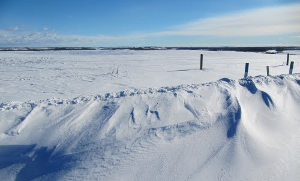

Research
Background
{kind=link}
I completed a BSc (honours with distinction) in Geography at the University of Victoria, in British Columbia, Canada in 2006. There, my studies focused on GIS, spatial statistics, and housing prices, and led directly to a fully funded MSc the following September. During my MSc studies, I was awarded the Derrick Sewell Graduate Research Scholarship in both 2006 and 2007, as well as two paper presentation awards at national conferences in Ottawa and Saskatoon. My MSc research focused on spatial-temporal aspects of snow cover and water content, and spatial-temporal analysis methods in general. Prior to completing my MSc dissertation in the summer of 2008, I was successful in obtaining PhD fellowships from the Irish Social Sciences Platform (ISSP) and the Social Sciences and Humanities Research Council (SSHRC) of Canada. I completed my PhD in September 2011, under the supervision of Prof. A. Stewart Fotheringham. My dissertation was entitled “Commuting flows & local labour markets: Spatial interaction modelling of travel-to-work”.
Current & Future Research
{kind=link}
My current and future research interests are ultimately concerned with modelling and understanding spatial processes. While much of the current work on modelling urban dynamics is concerned with networks and abstract representations of space, I also see the city as a sociological system made up of individuals who often behave in unexpected or inventive ways. In this vein, I am as much interested in theories of interactions, cities, and human dynamics as I am in the methods and models designed to characterize them. As part of my long-term research goals, I continue to incorporate theories of spatial interaction, urban geography, and GIScience into my work on complex urban systems and dynamics. Examples of the types of questions I am interested in answering include “how does the spatial structure and temporal dynamics of cities and regions contribute to the spatial-temporal patterns of various urban processes, such as housing prices and development, labour markets, and human mobility?” and “how does our understanding of aggregate movements within urban environments help us to understand the behaviour of individuals, and how can we effectively integrate human and urban processes at multiple scales?”.
My primary interest is in flow and movement data associated with underlying networks within urban environments, be they infrastructural, social, spatial, or a combination of all three. Spatial models are my primary means of quantitatively characterizing urban processes, and are used to explore data at a range of spatial and temporal resolutions. I also have a keen interest in developing new approaches to solving geographical problems by fostering expanded use of ideas and methods from outside geography and GIScience. In particular, I aim to promote the use of spatial analysis methods and data-driven research to help explore the complex hierarchies and interactions within urban environments.
PhD Research
Commuting flows & local labour markets: Spatial interaction modeling of travel-to-work
One of the most promising approaches to mitigating land-use and transportation problems is continued research on urban commuting. Commuting is essential to many individuals, allowing them to participate in the labour market and earn a living to meet their essential needs. As such, a better understanding of the determinants of commuting will ultimately lead to a better understanding of the complexities of employment, housing, and the many spatial processes underlying commuting. However, in order to understand the commuting process, it is important to examine the milieu within which commuting takes place: the local labour market (LLM). In my PhD research, the interplay between commuting and LLMs is explored through the use of regionalization techniques and spatial interaction models. I try to show that LLM characteristics play a significant role in intra-regional commuting patterns and that a failure to account for LLM conditions may seriously hinder the applicability of models of commuting. Specifically, I suggest that there are many different LLMs across Ireland and that these LLMs characterize the commuting patterns of population sub-groups. By incorporating these LLMs into models of commuting, I show that in addition to distance and working population size, the spatial structure of origins and destinations and a number of non-spatial attributes such as unemployment, housing density, and education, all significantly affect commuting flows. Furthermore, the distance decay component of these models can be shown to capture a combination of geographical distance and regional differentiation due to LLM boundaries, leading to ‘functional’ distance decay. This concept of functional distance decay is a key finding of my research, and, indicates that in addition to the configuration of origins and destinations, distance decay is also dependent on the spatial structure of LLMs, or more generally, the totality of surrounding conditions within which spatial interaction takes place. This research is funded in part by the ISSP, StratAG, and SSHRC, and is being completed under the supervision of Prof. Stewart Fotheringham.
{kind=link}
MSc Research
Spatial time-series analysis of satellite derived snow water equivalence
 My MSc research focused primarily on examining the spatial-temporal characteristics of snow water equivalence (SWE) in Canada, and comparing these characteristics to known or hypothesized climate and ecological processes. The spatial and temporal distribution of terrestrial snow cover has implications for many ecological processes, such as local snowmelt release, local and global atmospheric circulation, as well as climate, and hydrological cycles. The sensitivity of terrestrial snow cover and SWE to atmospheric conditions and overlying air temperatures also makes snow cover a useful indicator of climate change. Thus, examining the spatial distribution of terrestrial snow cover and SWE over time aides in understanding current and future trends in changing climate conditions. Our research links the spatial-temporal interactions of SWE to underlying land-cover characteristics, as well as generates relevant temporal characteristics from SWE time-series’ in order to explain the dominant SWE regimes across Canada. In addition to its broad implications for climate change research in general, this research also has implications for use in a national biodiversity monitory system for Canada, driven by remote sensing of multiple indicators of biodiversity. These indicators include productivity, disturbance, topography, and land-cover, of which terrestrial snow cover and SWE play an integral part.
{kind=link}